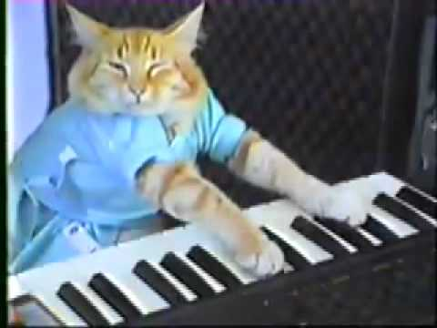

Gato Teclado

Ficha Técnica:
Nome: Gato Teclado
Nomes alternativos: Keyboard Cat, Maestro Felino, O Músico, Fatso, O Encerrador
Raça: Gato
Tipo da raça: Sônico Manipulador
Nivel de ameaça: Nulo
Características físicas:
- Gato laranja de porte grande, visivelmente acima do peso
- Patas dianteiras com dedos incomumente longos e ágeis
- Usa uma camiseta azul que não pode ser removida
- Sempre materializa um teclado eletrônico quando ativado
- Aparenta estar sempre sorrindo enquanto toca
Capacidades:
- Toca qualquer instrumento de teclas com maestria sobre-humana
- Suas melodias causam controle mental nos ouvintes
- Pode forçar pessoas a "saírem de cena" - literalmente as empurrando para fora de qualquer local
- A música apaga memórias recentes dos ouvintes (últimas 24 horas)
- Capaz de materializar instrumentos musicais do nada
- Suas composições causam falhas em equipamentos eletrônicos
- Quando toca, é impossível não dançar involuntariamente
Fraquezas:
- Completamente inofensivo quando não está tocando
- Sem acesso a um teclado, comporta-se como um gato gordo comum
- Tampões de ouvido com cancelamento ativo bloqueiam o efeito
- Música clássica o faz parar e ouvir atentamente
- Preguiçoso demais para perseguir qualquer pessoa
Como contê-lo:
Mantenha o Gato Teclado longe de qualquer instrumento musical ou equipamento que produza som. Se ele começar a tocar, coloque tampões de cancelamento de ruído IMEDIATAMENTE. Não tente apreciá-lo "só por um segundo". ALERTA: 14 funcionários foram encontrados dançando no corredor B-7 por 6 horas após um incidente de contenção. Nenhum deles se lembra do que aconteceu.
Relato do Agente Ricardo:
Agente Ricardo foi o responsável pela primeira contenção do Gato Teclado. Ele perdeu 3 dias de memória no processo.
"Eu não me lembro de nada. Minha equipe me disse que entramos no prédio abandonado, ouvimos uma música alegre e o próximo momento que lembro é de estar no hospital três dias depois. Aparentemente, eu passei dois dias dançando sem parar no estacionamento. Minhas pernas ainda doem. A câmera do meu colete registrou tudo: um gato gordo de camiseta azul tocando teclado enquanto nós todos dançávamos feito idiotas. O pior? Segundo as gravações, estávamos sorrindo o tempo todo."
Variações:
Há relatos de gatos que tocam outros instrumentos com efeitos similares, mas nenhum foi confirmado até o momento.
História:
A história do Gato Teclado ainda está sendo documentada.